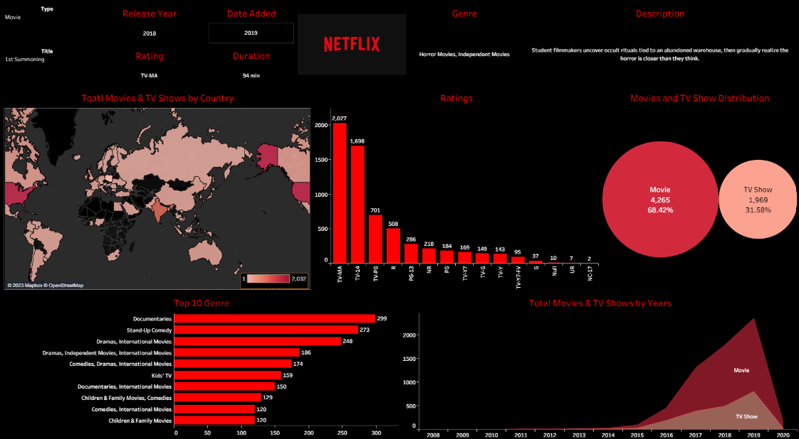
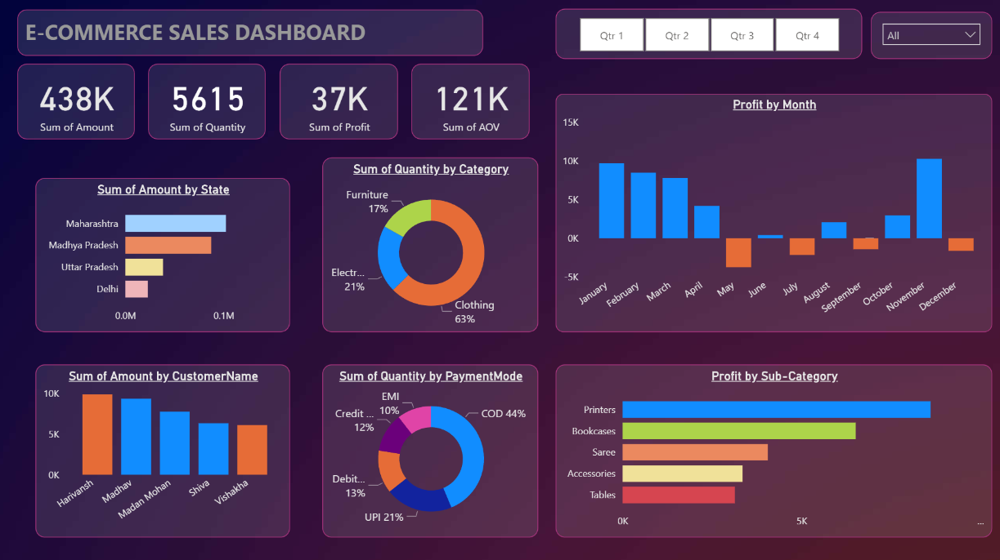
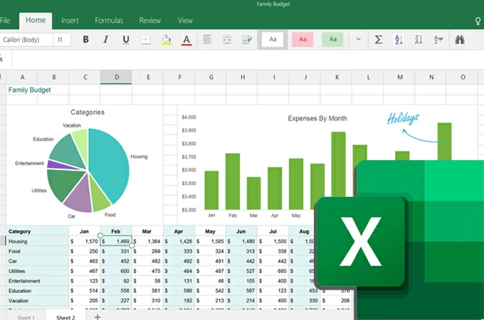

In this project, I employed advanced SQL techniques to systematically clean a dataset containing raw Housing Data.
SQL Server was utilized for querying the tables and performing data cleansing operations.

This section showcases a collection of SQL projects I have executed in recent months, encompassing
Exploratory Data Analysis, Data Cleaning, and the application of advanced and
intricate SQL queries to address compelling business questions.
Project In-Progress

A few visualisations created via "Tableau Public". I've worked on Spatial (Geo) data, forecasting and
multiple viz types.

A collection of a few Power BI Dashboards that touch upon key concepts like
Sales Forecasting, Time-Series analysis, DAX queries, Connections and Table-joins.

This section includes various dashboards created via Microsoft Excel that help answer and summarize key questions from
extracted datasets across different domains.